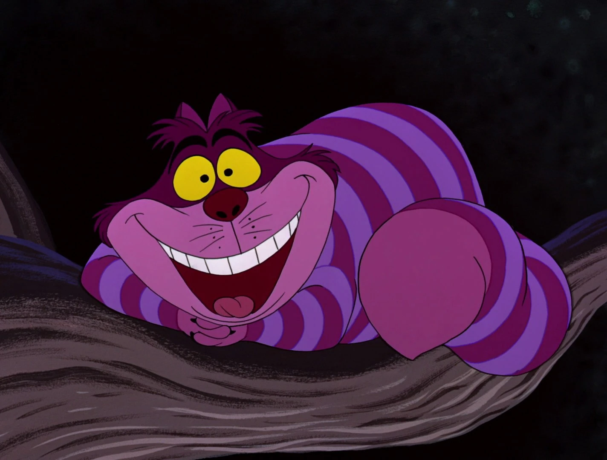

You come across a mischievous grin floating in the air, which turns out to be none other than the enigmatic Cheshire Cat. With its distinctive striped fur and captivating smile, the cat perches on a tree branch, seemingly unaffected by the laws of gravity.
The Cheshire Cat speaks in riddles, often offering perplexing advice and cryptic hints. It playfully guides you through the mystical wonders of Wonderland, disappearing and reappearing at will. Its sly and enigmatic nature adds an air of mystery to your journey.
As you engage in conversations with the Cheshire Cat, you realize that nothing is quite as it seems in this topsy-turvy world. Its whimsical wisdom and unpredictable nature keep you on your toes, urging you to embrace the unknown and uncover the secrets of Wonderland.